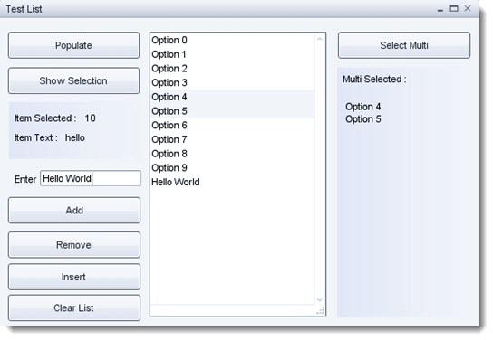
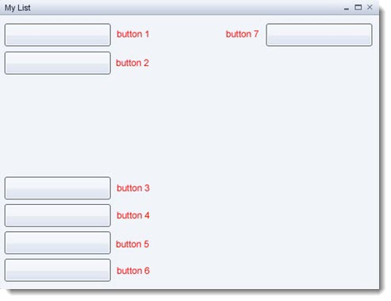
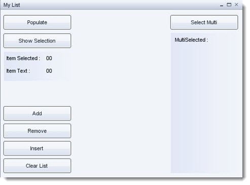
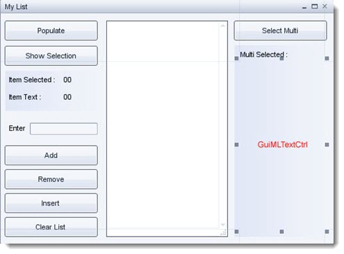

Introduction

This project will cover the list control, how to add, remove and insert
items in to the list. We will make an interactive demo showing how and
where to put the scripts for this project to function. Find out how to
make selections, multi-selections and display the results.
Suggested Reading:
Covered in this tutorial:
- Introduce the List Control
- Single and multi-selection
- How to populate your list
- Adding an Item
- Removing an Item
- Inserting an Item
Setting Up
Open your tutorial project and start the GUI Editor. Create a new Gui called testList using the GUI Class
type GuiControl. From the controls library add a GuiWindowCtrl to the editor work space.
Resize so as to fit a few buttons and a list similar to the above image.
GuiWindow property text: My List
Now we are ready to add our controls to the new window.
Adding Controls
STEP 1: First we will add our buttons to the window. Select
the GuiWindowCtrl control and add a GuiButtonCtrl from the library.
Reduce its width a little,
then copy / paste another 6 copies and move them so that you have
something similar to the following image.
Hint: GuiButtonCtrl is located in the Library > Buttons category.

Remember to use the toolbar align tools to help keep you GUI layout uniform and neat.
HINT: You may want to turn on Toggle Center Smart Snapping from the tool bar to help align the controls.
STEP 2: Next we need to set the button properties;
button 1 property text: Populate
button 2 property text: Show Selection
button 3 property text: Add
button 4 property text: Remove
button 5 property text: Insert
button 6 property text: Clear List
button 7 property text: Select Multi
Save your new GUI to game/art/gui as testList.gui
STEP 3: Next we need to add 2 GuiPanelCtrl controls and a few GuiTextCtrl controls. Set new controls' properties as follows:
text 1 property text: Item Selected
text 2 property text: Item Text
text 3 property text: 00
text 3 property name: lblItemSelected
text 4 property text: 00
text 4 property name: lblItemText
text 5 property text: Multi Selected
How it looks so far:

Remember to save often.
STEP 4: Now to add the last few controls. From the Library,
create a GuiScrollCtrl and place it in the center space. Add another
GuiTextCtrl, a GuiTextEditCtrl under the item Text section and a
GuiMLTextCtrl under the Multi Selected text.

Properties:
GuiTextCtrl property text: Enter
GuiTextEditCtrl property name: txtEnter
GuiMLTextCtrl property name: lblMLSelected
STEP 5: Select the GuiScrollCtrl so that it is highlighted and
add a GuiListBoxCtrl to the scroll control, this scroll control must
become the container for the List box.
GuiListBoxCtrl property name: lstTestList
That takes care of all our controls. Save your GUI and close down the project. Time to get into some script.
Adding Functionality
STEP 1: Create a new script file in game/scripts/gui and name it testList.cs and open it in your favorite script editor.
NOTE: The list control is indexed from 0 for the first entry.
The list control exposes a few methods for us to use in
populating and controlling list content. We are going to use the
following:
GuiListBoxCtrl.addItem( itemContent )
GuiListBoxCtrl.deleteItem( itemNumber )
GuiListBoxCtrl.insertItem( itemContent, itemNumber )
GuiListBoxCtrl.getItemText( itemNumber )
GuiListBoxCtrl.clearItems()
GuiListBoxCtrl.getSelCount()
GuiListBoxCtrl.getSelectedItem()
GuiListBoxCtrl.getSelectedItems()
Copy the following script to your new testList.cs:
function testList::addItem()
{
lstTestList.addItem(txtEnter.getValue());
}
//Insert An Item at the selection
function testList::insertItem()
{
lstTestList.insertItem(txtEnter.getValue(),lstTestList.getSelectedItem());
}
//Remove a selected Item
function testList::removeItem()
{
lstTestList.deleteItem(lstTestList.getSelectedItem());
}
//Fill list with content
function testList::populate()
{
for(%i = 0;%i < 10;%i++)
{
lstTestList.addItem( "Option " @%i);
}
}
//show selected content
function testList::getSelectedContent()
{
%item = lstTestList.getSelectedItem();
lblItemSelected.setValue(%item );
lblItemText.setValue(lstTestList.getItemText(%item ));
}
//Clear the list of items
function testList::clearList()
{
lstTestList.clearItems();
}
//Display multiselected items
function testList::multiSelect()
{
//number of selected items
%count = lstTestList.getSelCount();
//returns a space delimited list of all the selected items indexes in the list
%options = lstTestList.getSelectedItems();
// parse selected items list
for(%item = 0;%item <%count;%item++)
{
%option = getWord(%options,%item);
%t = lstTestList.getItemText(%option);
%text =%text @%t @ "\n";
lblMLSelected.setValue(%text );
}
}
STEP 2: Next we need to add our new script to the engine, open the game/scripts/client/init.cs and
add the following under the section named // Execute the GUI scripts and functions:
exec("scripts/gui/testList.cs");
We also need to add our gui to this file. Under // Load up the shell GUIs add the following:
exec("art/gui/testList.gui");
Save of your files and run your project. Open the testList GUI once again.
Scripting Hooks
For the final part of this tutorial we need to add the ability to
call our new functions from the respective buttons. Set the buttons
properties as follows:
button "Populate" property Command: testList.populate();
button "Show Selection" property Command: testList.getSelectedContent();
button "Add" property Command: testList.addItem();
button "Remove" property Command: testList.removeItem();
button "Insert" property Command: testList.insertItem();
button "Clear List" property Command: testList.clearList();
button "Select Multi" property Command: testList.multiSelect();
Remember to save your GUI. Preview your GUI and try out the
buttons, enter some text into the text edit box and try add, insert
etc. To multi-select hold down shift while selecting list items, then press
the Select Multi button.
Conclusion
In this tutorial, you learned the following concepts:
- Introduce the List Control
- Single and multi-selection
- How to populate your list
- Adding an Item
- Removing an Item
- Inserting an Item
In the next tutorial we will create an advanced graphical representation of a GUI.
|